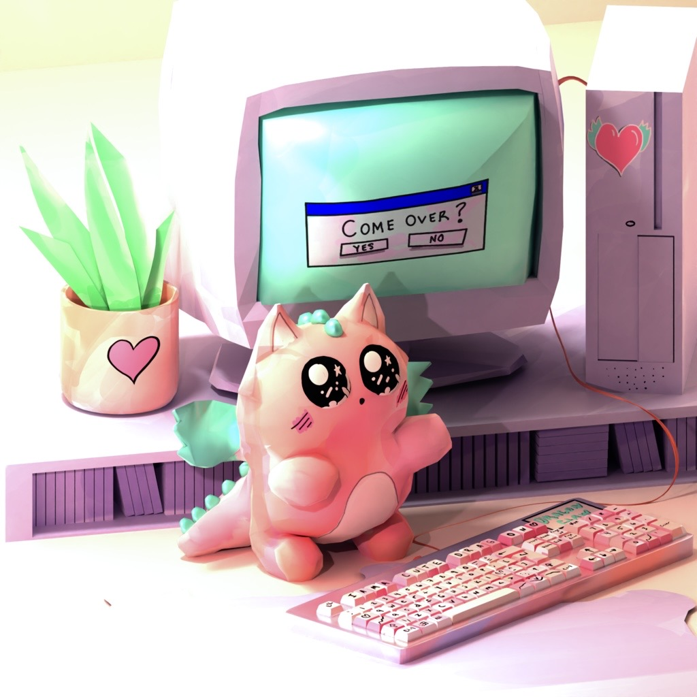

Experience
Under construction.


Education
MFA, Game Design
New York University, Tisch · 2017
AB, Literary Arts
Brown University · 2013
Recognition
- 2020Graffiti Games, Play NYC
- 2018Human Human Machine Award, A MAZE. — Tuned Out
- 2017Game Center Incubator Selection, NYU